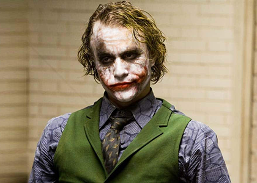
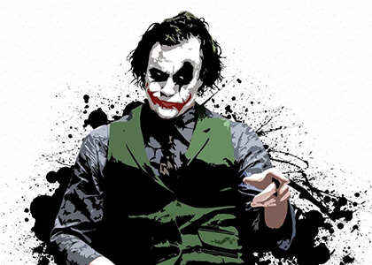
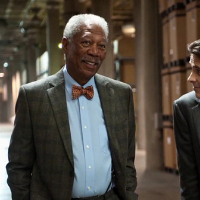

CHARACTER
Describing how his character had evolved from Batman Begins, Christian Bale said Wayne had changed from a young, naive, and angry man seeking purpose to a hero who is burdened by the realization his war against crime is seemingly endless.Because the new Batsuit allowed him to be more agile, Bale did not increase his muscle mass as much as he had for Batman Begins. Nolan had deliberately obscured combat in the previous film because it was intended to portray Batman from the criminals' point of view. The improved Batsuit design let him show off more of Bale's Keysi-fighting method training. scenic settings of Batman Begins such as the Himalayas and caverns for a modern, structured environment Joker could disassemble. Production designer Nathan Crowley said the clean, neat lines of Chicagoan architecture enhanced the urban-crime drama they wanted to make, and that Batman had helped improve the city. The destruction of Wayne Manor in Batman Begins provided an opportunity to move Wayne to a modern, sparse penthouse, reflecting the loneliness of his existence.[79] Sets were still used for some interiors such as the Bat Bunker, the replacement for the Batcave, on the outskirts of the city. The production team considered placing it in the penthouse basement but believed it was too unrealistic a solution.
-
- Bruce Wayne
- Bruce Wayne, also known by his vigilante persona Batman, is a fictional character who is the main protagonist in Christopher Nolan's trilogy of superhero films, based on the DC Comics character of the same name, created by Bill Finger and Bob Kane. Portrayed by Christian Bale, this version of Batman is arguably explored more in-depth compared to that of the previous film series by Tim Burton and Joel Schumacher, as the Dark Knight film series provides a full arc for the character and was intended by Nolan to be more realistic than previous portrayals.
-
- Joker
- The Joker is a character who appears in Christopher Nolan's 2008 superhero film The Dark Knight, as the main antagonist, in which he is portrayed by Heath Ledger. Based on the DC Comics supervillain of the same name, the Joker is depicted as a psychopathic criminal mastermind with a warped, sadistic sense of humor. He seeks to test how far the vigilante Batman (Christian Bale) will go to save Gotham City from descending into chaos and targets Batman's allies, including police lieutenant James Gordon (Gary Oldman) and district attorney Harvey Dent (Aaron Eckhart). The Joker embodies themes of chaos, anarchy and obsession: throughout the film, he expresses a desire to upset the social order in Gotham through crime, and defines himself by his conflict with Batman.
- 
- 
-

- Harvey Dent
- Harvey Dent was the newly elected district attorney of Gotham City. He was supported by his girlfriend, Rachel Dawes, and was responsible for locking up many of the city's corrupt officials and mobsters. However, both he and Rachel were captured and put in warehouses full of oil drums, and though Dent was rescued by Batman, half of his face was disfigured in the explosion. Driven insane by a desire for revenge for Rachel's death, Dent pursued those he felt responsible, ultimately holding Commissioner Gordon's family at gunpoint. During his confrontation with Batman, Batman rescued Gordon's child while Dent was pushed and fell to his death. Batman took the blame for Dent's murder to preserve Dent's reputation
-
Alfred
After the deaths of Thomas and Martha Wayne, at the hands of Joe Chill, Alfred became Bruce's legal guardian. When Bruce vanished, he was declared dead by Wayne Enterprises' CEO William Earle, idea that he could be Batman. When the League of Shadows attacked Wayne Manor, Alfred saved Bruce.
-
James Gordon
James 'Jim' Gordon is portrayed by Gary Oldman in Nolan's film series. A stern and moral officer, Gordon initially loses hope of protecting Gotham when he sees just how corrupt it is with a majority of the police departmclean uGo with the emergence of several villains with their own designs for the city.
-
 Lucius Fox
Lucius Fox was a research head and a friend of Dr. Thomas Wayne who was demoted by Wayne Enterprises CEO, William Earle to overseeing the supplies of Wayne Enterprises' aborted research projects and prototypes ox as his armorer for Batmae with the materials that became the Nomeayne's life by creating the cure for Scarecrow's Fear Toxin .
-
Rachel Dawes
Rachel Dawes is a fictional character who first appeared in Christopher Nolan's 2005 feature film Batman Begins. She was portrayed in that film by Katie Holmes, with Emma Lockhart as a younger version of the characte Dawes on the vistian Bale) childhood sweetheart.
-
Bank Robbery
While on their way to the bank,ly, thee slly be six shares due to the fact that they naturally have to include the Joker, the one who planned the job. Grumpy then accosted him, implying that he intends to make off with the money without giving Joker his cut due to feeling he doesn't deserve a share for "sitting out," and also citing that he knows why they call him the Joker.
-
Sal Maroni
Maroni fought a power struggle ove anht bnis boat was hijacked by Batman who drove it alongside a boat that was owned by rival gang leader, The Russian. Batman attacked both gangs at once, with assistance from his new device. Batman attempted to force a truce between the two gang leaders until he could get evidence against them, but was disrupted when one of Maroni's henchmen fired at him.
-
ScareCrow
Jonathan Crane attended Gotham City University to study the emotional functions of humanity, and spent his studying time trying to use fossils that were too dense to comprehend its benefits. Most doubted his brilliance, but at age 21, Crane was surprisingly given his doctorate in Psychology by the university's President, Dr. Titus V. Blaney, after he submitted a thesis on the etiology of the fear reflex in primary mammals (including humans).
-
Lau
Lau is the CEO of Lau Security Investments Holdings, a major business in Hong Kong whose success drew the attentions of Wayne Enterprises. During a business meeting, Lau speaks before the board of directors, suggesting a powerful joint business venture between their two companies. Lucius Fox, CEO of Wayne Enterprises, eagerly embraces Lau's proposition, despite Bruce (likely exhausted from his nightly ventures as Batman) being asleep in a chair.